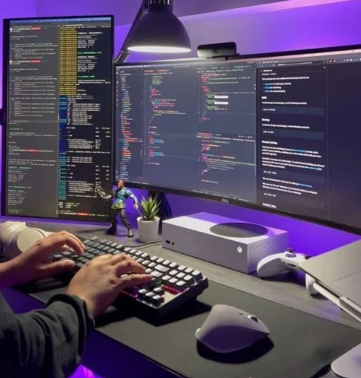
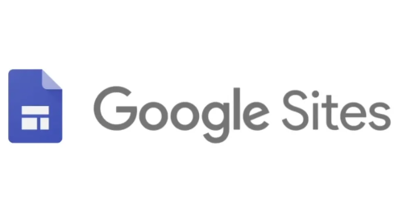

INTERFASES Y LENGUAJES DE PROGRAMACIÓN PARA DISEÑO WEB (HTML, JS, CSS)
SESIÓN 5 (02-04-2024)

En nuestra sesión abordamos el concepto de sitios web estáticos, los cuales presentan las
páginas tal y como están almacenadas, sin cambios basados en la interacción del usuario u otros
factores. Estos sitios se construyen con HTML, CSS y ocasionalmente JavaScript, a menudo siendo
creados manualmente por desarrolladores y luego cargados en servidores web. Su simplicidad de
creación y hospedaje, rapidez de carga al no requerir procesamiento del lado del servidor, y
seguridad al carecer de bases de datos, los hacen atractivos. Google Sites, por ejemplo, es una
herramienta de creación de sitios web proporcionada por Google, permitiendo a los usuarios
desarrollar sitios sin necesidad de habilidades avanzadas en programación.
SESIÓN 6 (02-04-2024)
 Google Sites, una aplicación gratuita dentro de la Web 2.0, ofrece flexibilidad para crear diversos tipos de sitios web, desde personales hasta educativos o empresariales, públicos o privados, y colaborativos. Es especialmente útil en educación, permitiendo tanto a profesores como a alumnos utilizarlo para aprendizaje individual o colaborativo, así como para organizar actividades o tareas. Con capacidad para almacenar archivos y compartirlos, requiere una cuenta de Google para acceder. La creación de un sitio implica elegir un nombre y una URL, y seleccionar un tema de diseño. La edición de páginas ofrece opciones para insertar diversos elementos como imágenes, enlaces o vídeos, y personalizar el diseño y la configuración del sitio. Además, permite administrar y compartir el sitio, incluyendo la gestión de usuarios y la personalización de la apariencia.